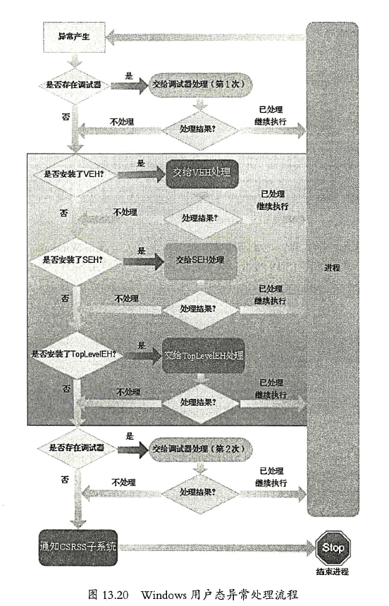

Hook概述
“Hook”，中文译为“挂钩或钩子”，在计算机中，当程序执行的时候，指令流也像水流一样，只要在适当的时候“下网”，就可以对程序的运行流程进行监控。
“Hook”的关键是通过一定的手段埋下“钩子”，“钩”住我们关心的重要流程，然后根据需要对执行过程进行干预。
采用Hook方式，导致了程序执行流程的改变，通过在执行真正的目标函数之前执行事先插入的代码，获得了程序执行过程的决定权——“插入特定代码以干预程序的执行流程”就是Hook的奥义。
Hook分类
Address Hook 修改数据（函数地址）进行Hook
Inline Hook 直接修改函数内的指令进行Hook
Address Hook
Address Hook是指通过修改数据进行Hook的方法。这里的数据通常指的是“函数的地址（偏移量）”。
这些数据通常放在各类表或结构中，或者某个指定的地址处，亦或特殊的寄存器中。他们的共同点是某个时刻总会成为程序执行过程中的EIP。我们只需要把这些函数的地址修改为我们自己写的函数的地址，这样们就可以轻松的拿到程序的控制权了。
Inline Hook
Inline Hook是指直接修改指令的Hook，其关键是转移程序的执行流程，一般使用各种转移指令。
基于异常处理的Hook
在程序执行过程中如果发生异常的时候，系统异常处理过程nt!KiDispatchException便会开始工作，在没有内核调试器存在且异常程序没有被调试的情况下，系统会把异常处理过程转交给用户态的异常处理过程，以查找系统中是否安装了异常处理程序。如果已经安装，就会调用异常处理过程对其进行处理。
如果在程序中自行安装SEH（或VEH）处理过程，然后向被Hook的位置写入一条会引发异常的指令（例如 INT3），或者通过改变被Hook位置的内存属性引发内存访问异常，程序执行到这里之后，就会触发异常，跳转到事先安装的异常处理过程

其他的Hook
病毒？
一个“优秀“的病毒，会在执行完病毒代码后跳回原始入口，执行程序的正常功能，使用户不易察觉到程序已经被感染。
一个优秀的Hook程序，达到自己的目的之后，不会对原来的程序的调用产生影响。
系统回调机制和分层模型（正规军）
Address Hook
各类表中的地址
PE的IAT
IAT(Import Address Table,输入表)，IAT具体指的是某个PE模块的IAT，我们可以通过修改IAT中的函数的地址来让它指向我们自己写的函数
这个Hook的关键在于如何修改IAT中的函数的地址。
看下面这段代码：
1
2
3
4
5
6
7
8
9
10
11
12
13
14
15
16
17
18
19
20
21
22
23
24
25
26
27
28
29
30
31
32
33
34
35
36
37
38
39
40
41
42
43
44
45
46
47
48
49
50
51
52
53
54
55
56
57
58
59
60
61
62
63
64
65
66
67
68
69
70
71
72
73
74
75
76
77
78
79
80
81
82
83
84
85
86
87
88
89
90
91
92
93
|
BOOL InstallModuleIATHook(
HMODULE hModToHook,
char *szModuleName,
char *szFuncName,
PVOID DetourFunc,
PULONG_PTR *pThunkPointer,
ULONG_PTR *pOriginalFuncAddr
)
{
PIMAGE_IMPORT_DESCRIPTOR pImportDescriptor;
PIMAGE_THUNK_DATA pThunkData;
ULONG ulSize;
HMODULE hModule=0;
ULONG_PTR TargetFunAddr;
PULONG_PTR lpAddr;
char *szModName;
BOOL result = FALSE ;
BOOL bRetn = FALSE;
hModule = LoadLibrary(szModuleName);
TargetFunAddr = (ULONG_PTR)GetProcAddress(hModule,szFuncName);
printf("[*]Address of %s:0x%p\n",szFuncName,TargetFunAddr);
printf("[*]Module To Hook at Base:0x%p\n",hModToHook);
pImportDescriptor = (PIMAGE_IMPORT_DESCRIPTOR)ImageDirectoryEntryToData
(hModToHook, TRUE,IMAGE_DIRECTORY_ENTRY_IMPORT, &ulSize);
printf("[*]Find ImportTable,Address:0x%p\n",pImportDescriptor);
while (pImportDescriptor->FirstThunk)
{
szModName = (char*)((PBYTE)hModToHook+pImportDescriptor->Name) ;
printf("[*]Cur Module Name:%s\n",szModName);
if (stricmp(szModName,szModuleName) != 0)
{
printf("[*]Module Name does not match, search next...\n");
pImportDescriptor++;
continue;
}
pThunkData = (PIMAGE_THUNK_DATA)((BYTE *)hModToHook + pImportDescriptor->FirstThunk);
while(pThunkData->u1.Function)
{
lpAddr = (ULONG_PTR*)pThunkData;
if((*lpAddr) == TargetFunAddr)
{
printf("[*]Find target address!\n");
DWORD dwOldProtect;
MEMORY_BASIC_INFORMATION mbi;
VirtualQuery(lpAddr,&mbi,sizeof(mbi));
bRetn = VirtualProtect(mbi.BaseAddress,mbi.RegionSize,PAGE_EXECUTE_READWRITE,&dwOldProtect);
if (bRetn)
{
if (pThunkPointer != NULL)
{
*pThunkPointer = lpAddr ;
}
if (pOriginalFuncAddr != NULL)
{
*pOriginalFuncAddr = *lpAddr ;
}
*lpAddr = (ULONG_PTR)DetourFunc;
result = TRUE ;
VirtualProtect(mbi.BaseAddress,mbi.RegionSize,dwOldProtect,0);
printf("[*]Hook ok.\n");
}
break;
}
pThunkData++;
}
pImportDescriptor++;
}
FreeLibrary(hModule);
return result;
}
|
PE中的EAT
EAT(Emport Address Table，输出表)与IAT不同，EAT中存放的不是函数地址，而是函数地址的偏移使用时需要加上模块基址。所以，在进行Hook时，要用自己写的函数的地址减去被Hook模块的基址。
user32.dll的回调函数表
在user32.dll中有一个名为USER32!apfnDispatch的回调函数表，其中存放了各种GUI的回调函数，通常与内核中的KeUserModeCallback函数配合使用。
IDT
IDT(中断描述符表)是操作系统在处理中断基机制时使用的一张表。当中断发生时，操作系统需要知道应该把中断交给谁去处理，因此需要用一张表来存储这些信息以便操作系统来使用。
SSDT和Shadow SSDT
SSDT 系统服务描述符表
C++类的虚函数表
虚函数和重载是C++非常重要的特性，它可以使子类以相同的接口实现与基类不同的功能，编译器使用了一个地址表来保存虚函数的地址，称为虚函数表。
COM接口的功能函数表
处理例程地址
特殊寄存器中的地址
特定的函数指针
Inline Hook
Inline Hook是指直接修改指令的Hook，其关键是转移程序的执行流程，一般使用jmp,call,retn之类的转移指令。
一般主要有以下⑤种方式：
jmp xxxxxxxx（5字节）
直接跳转到某地址
push xxxxxxxx/retn（6字节）
通过压栈返回实现跳转
mov eax,xxxxxxxx/jmp eax（7字节）
call Hook
HotPatch Hook